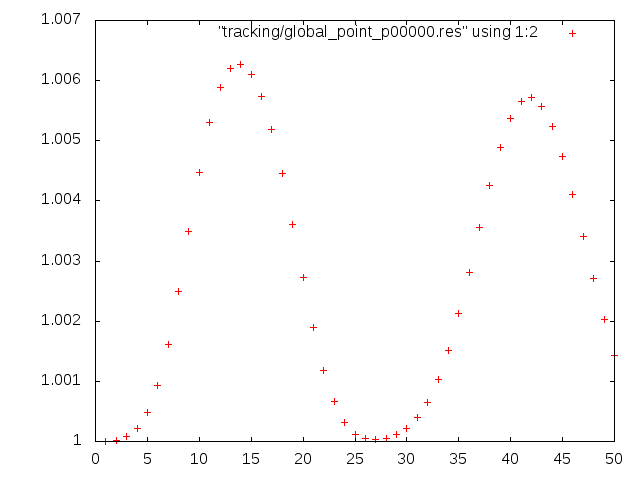

Warning
WORK IN PROGRESS
Navigate: ← Prerequisites | Overview | Toolchain →
Set up your first simulation with Musubi.
This tutorial is using a 1D gaussian_pulse in pressure computed in a 3D domain.
The necessary configuration file to run this case will be generated from
scratch within this tutorial.
The final config-file for this case can be found in
examples/tutorials/tutorial_cases/tutorial_gaussian_pulse/.
We communicate with Musubi via a Lua-Script that tells Musubi what we want to simulate and which options we want to set. The Lua-syntax is fairly easy, and for this tutorial, we will use only a small subset of it, so don't be afraid if you hear of Lua for the first time.
By default, Musubi looks for a file called musubi.lua inside your current
working directory. If you want, you can use different names (for example if
you want to keep more than one script e.g. musubi_test.lua) and pass the name
of the script you want the application to use as a command-line argument.
(e.g.~/apes/musubi/build/musubi musubi_test.lua)
We are now going to build a working, almost-minimal musubi.lua file
step-by-step.
Please navigate to your simulation directory, and create a new file called
musubi.lua with your favorite text editor.
Note
Most configuration options have some sane defaults, which allows you to leave them alone if they are not relevant to you.
Note
Before you run the following simulation setup, make sure that you have
created the subdirectories restart and tracking in the same path where
musubi.lua is located.
Lua provides a convenient data structure called
tables, that we use extensively in the
configuration to structure it.
Tables allow us to gather relevant settings together.
They are indicated by curly brackets {}.
Thus, we can define a table like this:
atable = { somevalue = 123 }
Note that tables can be nested and values inside the table can be themselves
be tables again.
We can have an arbitrary amount of values in the table definition and individual
settings are separated by comma (,), like this:
atable = {
somevalue = 123,
anothervalue = "abc"
}
A superfluous comma at the end of the last entry is also valid syntax here.
Alternatively, we can also modify or add values to an existing table via the dot operator:
atable.somevalue = 42
atable.third = 1.23
Here we modify somvalue in the atable table and add a third entry
with the value 1.23 to the table.
Comments in Lua are introduced by two dashes (--). We also make use of
these to offer explanations to the settings in the configuration scripts.
Note
The complete configuration file is executed and the status of the various settings "at the end" of that execution is what Musubi will obtain.
Every simulation should have a name, which is specified by the variable
simulation_name in the Lua script.
In this example, we will simulate a Gaussian pulse in pressure, hence the name Gausspulse seems adequate. You can use just anything as a simulation name, just make it clear and descriptive, as it will help you to identify produced results from the simulation.
Note
The simulation name will appear in all output files, so if you use good and unique names, you always know where a particular output came from.
simulation_name = 'Gausspulse'
Musubi requires us to define the properties of the fluid to simulate in
a fluid table.
In that table we define the kinematic viscosity in the variable
kinematic_viscosity:
fluid = {
kinematic_viscosity = 1.2e-6
}
In the incompressible model this is already enough to define the fluid.
For weakly compressible models, we also need to provide the bulk viscosity
in the variable bulk_viscosity:
fluid = {
kinematic_viscosity = 1.2e-6
}
fluid.bulk_viscosity = 2*fluid.kinematic_viscosity/3
Notice how we defined the second entry here in dependency of the first. This is not possible when defining all entries in the table directly, thus we are using a separate line after the first definition of the table to set the bulk viscosity.
One question that arises in setting the values in the fluid table, but also in other settings like the initial conditions, boundary conditions or source terms, is in what units those values are to be provided.
The solver works on so called lattice units, which are tied to the discretization.
However, that often is a little cumbersome to work with and it also provides
the possibility to instead translate the given quantities from physical
units.
To that end the user has to provide a physics table.
When provided by the user that table will be used by Musubi to convert
given fluid property settings to the internal lattice units for the computation.
It will also be used to translate results back to physical units in variable
names that have a _phy suffix.
Thus, when you want to refer obtain the resulting velocity field from the
computation you would access the velocity_phy variable, which provides the
velocity converted with the help of the settings in the physics table.
The physics table provides the necessary quantities to transform physical units
to the lattice units used by the solver internally.
Specifically it applies to the fluid.kinematic_viscosity setting and macroscopic
variables like pressure and velocity used in the definition of boundary and
initial conditions.
As described above, these parameters/variables can be defined either in physical units or lattice (non-dimensional) units. But they can not be mixed i.e. some in physical and others in lattice units. It is important that they are consistent.
Two settings describe space and time: the edge length of the coarsest elements
in the grid (dx) and the step length of the time steps of those elements
(dt).
While dx is given by the mesh definition, the time step length has to be
derived differently.
Usually, this is achieved by providing the physical speed of sound cs of the
fluid in the physics table.
Musubi computes the time step length via the relation
$dt = dx * cs_{lat} / cs$, where $cs_{lat}=\sqrt{1/3}$.
the physics table for the conversion between lattice and physical units.
Alternatively, dt on the coarsest level itself may be provided in the physics
table, which implies a speed of sound according to the relation above.
Note, that for a fixed physical speed of sound, the time step length is
proportional to the element edge lengths.
In case of multilevels this relation is maintained and the time step size
scales along with the mesh element sizes.
Finally, we need to define either the mean density rho0 of the fluid or the
fluid mass mass0 in the coarsest elements.
Providing the mass is more natural when simulating multiple species, as we can
work with the respective mass fractions in that case.
Otherwise, we usually describe the mean density.
Both, cs (or dt on the coarsest level) and a measure for the mass have to
be provided in the physics table.
Thus, a minimal physics table should look like this:
physics = {
cs = 330.0,
rho0 = 1.0
}
In Musubi, the following reference values are used to convert parameters/variables in physical units to lattice units and vice-versa:
| Measure | Unit | Reference | Notation. | Name in physics table | Default value |
|---|---|---|---|---|---|
| Mass | $kg$ | fluid mass | $m_{ref}$ | mass0 |
$rho0\times dx^3$ |
| Density | $kg/m^3$ | mean fluid density | $\rho_{ref}$ | rho0 |
$mass0/dx^3$ |
| Length | $m$ | coarsest element | $dx_{ref}$ | Not required | is taken from mesh |
| Time | $s$ | coarsest time step size | $dt_{ref}$ | dt |
- |
| Amount of substance | $mol$ | Inverse of Avagadro's number | $N_A$ | mole0 |
$1/6.02214129e^{-23}$ |
| Mole density | $mol/m^3$ | mean mole density | $c_{ref}$ | moleDens0 |
$1/(N_A dx^3)$ |
| Molecular weight | $kg/mol$ | Largest molecular weight of species | $M_{ref}$ | molWeight0 |
$mass0/mole0$ |
| Temperature | $K$ | fluid temperature | $T_{ref}$ | temp0 |
1.0 |
| Electric charge | $C$ | fundamental electric charge | $q_{ref}$ | coulomb0 |
$1.60217657e^{-19}$ |
As shown in the table most of them have default values and the coarsest element size (dx)
is taken from the mesh.
Thus the physics table provided above offers the minimal, but also usual
setting for most cases.
The non-dimensional lattice units (subscript l) are scaled to one for the computation by choosing the provided physical units (subscript p) provided in the physics table also as the reference values (subscript ref):
All other derived variables in lattice units are converted to physical units using the reference variables in physical units. For simplicity, the subscript 'ref' is dropped in the equations below for the reference values:
For more on the unit conversion for other derived variables refer to [mus_physics_module(module)].
All physical quantities set in the configuration are affected by these
conversions.
This includes the settings in the fluid, species and mixture tables,
aswell as the macroscopic variables in the initial_condition, boundary_condition and source
tables.
Now, usually we do not really care about the timestep width, but rather want to compute this from the other fluid properties. By using a Lua script for the configuration, we can easily define those relations by defining appropiate variables and compute the needed variables for the Musubi settings.
For example like this:
-- Flow parameters
-- Mach number
Ma = 0.05
-- Reynolds number of the flow
Re = 60
-- speed of sound in air [m/s]
cs_phy = 343
-- Density of the fluid [kg/m^3]
rho0_phy = 1.0
-- Ambient pressure [kg/(m s^2)]
press_ambient_phy = rho0_phy*cs_phy^2
For convenience, a suffix '_phy' and '_lat' are used to represent variables in physical and lattice units respectively. In Musubi, the flow is considered to be isothermal. For a perfect ideal gas, the pressure is related to the speed of sound as i.e. $p = \rho c^2_s$.
The lattice speed of sound is fixed to $c_{s,lat} = \sqrt{(1/3)}$
-- Lattice speed of sound
cs_lat = math.sqrt(1.0/3.0)
Finally, the physical time step size $dt$ required in the physics table.
It is computed either by acoustic or diffusive scaling.
In acoustic scaling, the time step $dt$ is computed from the speed of sound or
velocity so that the Mach ($Ma$) number is fixed across different element sizes.
Thus, when conducting grid convergence studies with
acoustic scaling, the Mach number, lattice speed of sound and lattice velocity
remain constant while the lattice viscosity nu_lat``and relaxation parameteromega` ($\omega$) changes.
-- Inflow velocity computed from Ma number [m/s]
vel_phy = Ma * cs_phy
-- Kinematic viscosity of the fluid calculated from Re [m^2/s]
nu_phy = vel_phy * height / Re
-- Lattice velocity
vel_lat = Ma * cs_lat
-- Physical timestep computed from physical and lattice speed of sound
dt = cs_lat / cs_phy * dx
-- Lattice viscosity
nu_lat = nu_phy*dt /dx^2
-- Relaxation parameter
omega = 1.0/(nu_lat/cs_lat^2 + 0.5)
On the other hand, in diffuive scaling, the time step $dt$ is computed from
the kinematic viscosity so that the lattice kinematic viscosity nu_lat
and the relaxation parameter omega ($\omega$) are fixed across the element
sizes while the Mach number $Ma$ and lattice velocity $vel_lat$ changes.
-- In diffusive scaling, Kinematic viscosity and omega are fixed by user
-- Kinematic viscosity of the fluid [m^2/s]
nu_phy = 0.285
-- Inflow velocity is computed from Re and viscosity [m/s]
vel_phy = Re * nu_phy / height
-- Relaxation parameter
omega = 1.7
-- Lattice viscosity
nu_lat = ( 1.0/omega - 0.5 ) / 3.0
-- Physical timestep computed from physical and lattice velocity
dt = nu_lat/nu_phy*dx*dx
-- Lattice velocity
vel_lat = vel_phy*dt/dx
-- Mach number
Ma = vel_lat * cs_lat
Note
Most of the variables mentioned above are local variables.
we need rho0_phy and dt to define variables in physical units in the physics
table, nu_phy to define the fluid property in the fluid table,
and press_ambient_phy and vel_phy to define initial and boundary conditions
in initial_condition and boundary_condition tables.
In simple words, with acoustic scaling, the time step size $dt$ is reduced by half when the element size $dx$ is reduced by half i.e. $dt \propto dx$ but with diffusive scaling, the time step size $dt$ is reduced to one-fourth i.e. $dt \propto dx^2$.
With those definitions in place you can then define the physics table with the help of those variables:
physics = {
dt = dt,
rho0 = rho0_phy
}
And of course also the fluid table:
fluid = {
kinematic_viscosity = nu_phy
}
When physical units are not of interest and you would like to just run a simulation
by defining lattice units, remove the physics table from the Musubi
configuration file. In this case, the variables are then defined in lattice units
-- Relaxation parameter
omega = 1.8
-- Background density in lattice unit
rho0 = 1.0
-- Lattice speed of sound
cs = math.sqrt(1/3.0)
-- Background pressure in lattice unit
p0 = rho0*cs^2
-- Kinematic viscosity in lattice unit
nu = ( 1.0/omega - 0.5 ) / 3.0
Note
Musubi can dump output variables in physical units. It just requires a suffix '_phy' to the variable name in tracking table.
Now we should specify the number of timesteps for our simulation.
We do this by opening a time section with at least the variable max
given to specify the maximal number of timesteps you want to simulate.
Additionally, you might provide the interval-setting, that controls the
debug output: after a predefinded number of iterations, the total density of
the system is calculated and written to the console, this defaults to 1.
The number of iterations can be set by using {iter=#} to set the number of
iterations. Alternative one can use {sim=#} to trigger the check after certain
timesteps in your simulation or use {clock=#} to trigger the check after a
certain runtime. Since we have conservation of mass, the total density should
not change much, so if it does, it is a hint for the user that the results of
the simulation are probably wrong. Setting the interval to something around
[max/10] is reasonable.
sim_control = {
time_control = {
max = {iter=50},
interval = {iter=5}
}
}
It should be followed by a part that identifies the nature of the simulation.
To this part belong the following aspects: the layout, the kind and the
relaxation. For now, it is not necessary to know these settings in detail.
you can choose between some values that you can look up in the
mus_scheme_header_module.
If these settings are not defined, Musubi will use default values.
As a first example, you can set up the identify table as:
identify = {
kind = 'fluid',
layout = 'd3q19',
relaxation = 'bgk',
}
The geometry is usually a more complicated thing to define. For anything
but the simplest case, we need Seeder, a tool that will be dealt with
in the next tutorial chapter.
For now, we will use a pre-defined geometry, which is just a simple cube
with periodic boundaries and no obstacles. We can specify the length
and position (origin) of that cube. The position of the cube is only
relevant if you specify positions of other objects, too, such as
initial conditions or trackers (we will explain what that is in
chapter_03).
Last but not least, the refinementLevel tells Musubi how fine the
initial cube (with a length of 10 here) needs to be discretized. A refinement
level of 4 means that our initial cube is cut into portions in
each dimension, which leaves us with cells in 3 dimensions.
mesh = {
predefined = 'cube',
origin = { 0.0, 0.0, 0.0 },
length = 10.0,
refinementLevel = 4
}
Warning
Lua is case-sensitve, and some Musubi options (like refinementLevel)
have to be written in camelCase.
Of course you do not only want to simulate, you also want to see results.
The tracking section is your way to control some subset output from Musubi.
The idea behind it is that for any real-life scale problem, you just
cannot save all the information of every point at every timestep,
since the shear amount of data would be too much to handle. Thus, we
tell Musubi what we want to see (like pressure, velocity...), at what
time, and in what position.
Each output is handled by a tracker. Let us define a tracker now, step
by step.
First, a tracker has a name (specified in label) that will appear in
every output file created by this tracker. Anything that is precise and
meaningful will do.
tracking = {
label = 'track_pressure',
Next, we should tell the tracker what we are interested in. The variable
section will do just that for us. In this example, we will ask the tracker
to store density and velocity information for us.
The output will be stored on your hard drive, in the location you specify
in folder.
Warning
You have to create the folder yourself before you start the simulation. If it doesn't exist, Musubi will crash with a Fortran runtime error.
variable = { 'pressure', 'velocity' },
folder = './tracking/',
The most complicated part is the tem_shape_module variable.
It defines where inside
the simulation domain (which is a cube in our example) you want to observe the
variables. You can take samples at a point, along a line, everywhere on a plane,
or even everywhere inside a given box. These options will be discussed in more
depth in chapter_03.
For now, we are happy with a point at position (1,1,1):
shape = {
kind = 'canoND',
object = {origin = {1.0, 1.0, 1.0} }
},
The format option lets you choose the file format in which the data
should be stored. The options you have are ascii, asciiSpatial and vtk.
Ascii is only really usable for point trackers. For anything more
sophisticated (starting in the next chapter), we will use the build-in tool
mus_harvesting for post-processing the data.
output = {format = 'ascii'},
Finally, we have to specify at which timesteps we want to save data.
Inside the time section, you can specify the first (min) and last
(max) timestep that is of interest to you. If [max] is negative,
every timestep till the end will be considered. In interval, you can
choose if you want to save every timestep (set it to 1 then) or only
every [n]-th timestep (set interval to n in this case).
time_control = { min = {iter=1}, max = {iter=50}, interval = {iter=1} },
}
Don't forget to close the tracking section with another curly brace.
In the restart part of your musubi.lua file you can create so-called restart
files in order to save the results of your simulation. With these restart files
you can create vtk files with mus_harvesting to view them in Paraview. In
addition to that, you can also read the restart files to go on with your
simulation beginning at the saved point written in the restart files. In the
"restart" section you are also able to use time_control to define the min,
max and the interval time, when Musubi writes a restart file to the
restart/ folder. Be sure that you set up useful definitions for that. For
example, you can set up the restart settings like this:
restart = {
write = 'restart/', -- prefix to write the files to
time_control = { min = 0, max = 10, interval = 10} -- timing definitions (either iterations or simulation time)
}
Note
You have to create the restart folder within your simulation folder at
first.
So far, these are only basic information about restart.
Further information about the restart are explained in
Tutorial 5: Restart.
Initial conditions can be specified in the initial_condition table.
First, let us define that the velocity at t=0 should be 0 everywhere.
But if every point is equal, not much is going to happen. So for the
initial pressure, we will do something more fancy: We will define a function
gausspulse that will set the initial pressure such that it has a peak
in the middle of the domain, and decreases quickly towards the sides.
With this, we will create two waves running from the center towards both
sides. The initial_condition-table will point to this function for the
density:
initial_condition = {
velocityX = 0.0,
velocityY = 0.0,
velocityZ = 0.0,
pressure = gausspulse
}
The function can be defined like this in the Lua script:
function gausspulse(x, y, z)
originX = 5.0
halfwidth = 1.0
amplitude = 0.01
return p0+amplitude*math.exp(-0.5/(halfwidth^2)*( x - originX )^2)
end
Warning
Define the function before the initial_condition table or you will receive an error whilst
running Musubi.
Moreover,define the p0 as global variable in the function.
So that it will return the function like p0+amplitude*math.exp(-0.5/halfwidth^2)*(x-originX)^2:
rho0 = 1.
cs2 = 1./3.
p0 = rho0*cs2
Note
A last short remark on variables: If you do something more complicated
in your musubi.lua script, you are of course free to use functions,
variables, loops, branches, whatever you want.
The only thing that counts is what is defined after running your script.
Be careful, however, when using your own variables, as you might set Musubi
options that you are not aware of.
It might be wise to use variables only inside your own functions,
or at least give them some prefix so you don't confuse your own variables
with Musubi options.
Note
An important remark on the pressure variable. It is a total pressure irrespective
of fluid and fluid_incompressible. So if pressure flucations are required
to compute the acoustic waves then they can be obtained by calculating a
difference between numerical pressure computed from simulation and
ambient pressure defined in initial/boundary condition.
If you did all steps correct you're now able to run the test case. If something
is not working you can compare your config file with our template you can find
under: examples/tutorials/tutorial_cases/tutorial_gaussian_pulse/musubi.lua.
After finishing your run, you will find an output file called
Gausspulse_track_pressure_p00000.res in your tracking-folder.
If you open it, you will find densities and velocities for every iteration.
If you choose an other interval in tracking-table
(for example iter=5), the values for every choosen iteration
(e.g. every 5th iteration) will be listed here.
Note
The Ascii output is used only in this first tutorial. You can visualize this data with any program you like, for example with Gnuplot, if you have it installed. If not, wait for the next chapter, as we are going to introduce different tools there, anyway. Simply run Gnuplot with:
gnuplot -p -e "plot \"tracking/Gausspulse_track_pressure_p00000.res\" using 1:2"
to get a plot of the pressure similar to this one:

The picture shows the pulse running through your point tracker several times. This happens because of the periodic boundaries. The intensity of the pulse decreases due to dissipation.
In the next chapter, we will learn to define more complex geometries, and to create more sophisticated outputs.
Next chapter: Toolchain →